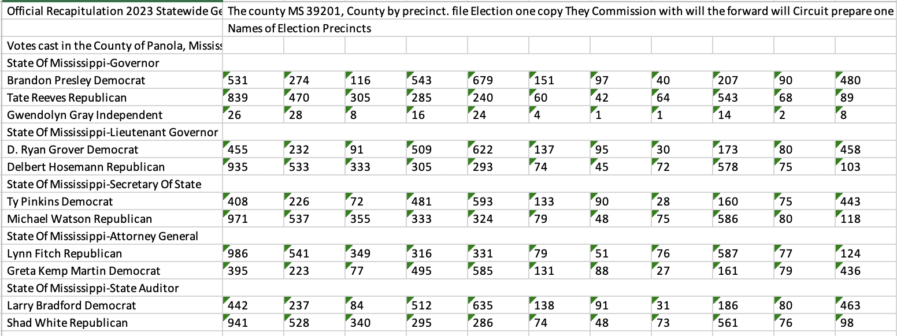

import os
from textractor import Textractor
extractor = Textractor(profile_name="default")
from textractor.data.constants import TextractFeatures
folder_path = "path/to/local/folder"
for root, dirs, files in os.walk(folder_path):
for file_name in files:
if file_name.endswith(".pdf"):
if file_name in ['Panola.pdf', 'Yazoo.pdf']:
print(file_name)
document = extractor.start_document_analysis(
file_source=f"s3://S3BUCKET/{file_name}",
features=[TextractFeatures.TABLES]
)
document.export_tables_to_excel(f"{folder_path}/{file_name}.xlsx")When it comes to turning official precinct election results into data, there are few states like Mississippi.
The Magnolia State isn’t like New York, where there’s no centralized statewide reporting system for precinct results (not yet, at least). But the 82 counties in Mississippi participate in a frustrating system: they produce a precinct report in the same electronic format, then print out that document, have county election officials sign it and then send it to the Secretary of State in Jackson, where it gets scanned into a PDF and posted on the SOS site. Here’s what one looks like:

That means that to turn what obviously are tables into actual data, you need to choose one of two options: data entry or OCR, where software extracts the values. In a better world, the electronic versions get posted somewhere so that OCR isn’t needed, but we don’t live in that world and it’s unlikely we will anytime soon. As part of my work with OpenElections, I’ve mostly relied on data entry, which has its own issues and can cost significant amounts of money. For a state like Mississippi, we’re talking about more than 50,000 rows of data for a statewide general election, which easily will run into four figures (and usually leads to transcription mistakes).
That leaves OCR. But there’s an additional wrinkle with Mississippi’s results reports, and that’s those vertical headers for the names of the precincts. Some OCR software will struggle to handle those, meaning that often you’ll need to restrict the OCR process to portions of each page. That’s on top of just how difficult OCR can be on documents with unusual marks. For Mississippi, our recent process for turning these documents into data has been some OCR and some data entry, and a lot of time. In most cases, it takes months for OpenElections to post a statewide precinct results file.
Today, after less than a month of off-and-on work, OpenElections posted a statewide precinct results file from the November 2023 general election. It’s the earliest we’ve done this, and this file is the most accurate one we’ve ever produced. Here’s why: we switched to using Amazon Web Service’s Textract, which identifies and extracts text and numbers from document images like PDFs. There are very good OCR software programs out there, but what Textract does very well is identify tables and extract just those, ignoring information that might make it harder to process the document and produce a clean result. The accuracy of its text extraction is remarkable, even compared to popular software like tesseract.
AWS can be a bit of nightmare to start using - the documentation often appears to be written by people who only use Amazon’s offerings and services like Textract are mostly designed for large-scale bulk processing, which can make demos harder than they need to be. But for the quality of the output, it’s worth the effort. For the Mississippi results, we used Python, and in particular the Textractor library written by the AWS folks. It has a straightforward API and while it assumes that your documents are already located on S3, the cost of having them there is trivial for most jobs.
Here’s one way to approach the Mississippi precinct results: put the 82 PDF files in an S3 bucket (I mirrored them locally just so I could easily compare the original and results). After installing the Textractor library - I used the PDF option -, use Textract’s TABLES feature to have it perform OCR on each document, isolate the tables and then export each document’s table to an Excel file, with each table on a separate sheet in the file. Here’s what that script might look like:
Check that screenshot of results from Panola County from above. Here’s what they look like in Excel:

Now, this isn’t perfect. Those vertically-oriented headers with the precinct names aren’t there; Textract, like most OCR software, just doesn’t deal with them, although they also don’t ruin the OCR job, either. The candidate name and party are slapped together, as they are in the original document. But the table of results is pristine. In processing all 82 counties, I found 3 instances where Textract didn’t get the votes right, and those were due to either a stray mark on the original document or because the PDF’s orientation was uneven. Processing all 82 files took less than an hour, and cost less than $50. Let me repeat that: it cost less than $50 to produce high-quality vote totals for every county in the state.
Textract doesn’t only produce Excel files; you can extract tables as text and work with that data programmatically, too. Since this was the first time I was working with it using the Mississippi files, I wanted to see the results. It worked best for pages where every precinct had a numeric value; for those with “X” - indicating that the contest was not on the ballot in that precinct - Textract sometimes didn’t extract the X but did leave the value blank. But in terms of overall performance I’m sold, and will be using it for similar work going forward.